Kode Editor
Web Browser
Fitur Bermanfaat
Gunakan tanda panah (atas untuk jawaban tersebut terlihat baik) dan panah (bawah untuk jawaban tersebut terlihat buruk)
Jika terdapat komentar yang berupa solusi terbaik dari permasalahan yang anda tanyakan, tandailah komentar tersebut sebagai jawaban terpilih. Dengan menekan tombol "Jawaban terpilih"
Browser adalah alat yang digunakan untuk mengakses atau mengembangkan website
CSS Cascading Style Sheet adalah bahasa markup yang digunakan untuk mempercantik website. Bahasa ini merupakan pelengkap HTML
Client adalah perangkat yang memiliki kemampuan mengirimkan permintaan atau request kepada server melalui protocol HTTP. Hasil request tersebut akan diterima oleh client jika serber telah mengirimkan tanggapan (Responsive)
DNS atau Domain Name System adalah layanan jaringan yang berguna untuk menerjemahkan nama domain menjadi alat IP
HTML atau Hyper Text Markup Languange adalah bahasa markup standar untuk mengembangkan halaman web. HTML ini akan mendeskripsikan struktur dari halaman web dan membertahukan Browsebagaumana menampilkan konten
HTTP Server : Server yang berperan pada sebuah website sebagai sebuah software yang dapat menerima transaksi dari HyperText Transfer Protocol
Plain Text : Teks yang tak terformat. Biasanya digunakan untuk menuslikan kode program seperti website
Rich Text : Teks yang terformat. Biasanya digunakan dalam pembuatan dokumen menggunakan aplikasi Microsoft Word atau lainnya
Sistem Operasi : Perangkat lunak sistem yang mampu mengelola sumber daya dari perangkat lunak dan perangkat keras agar dapat berjalan dengan baik serta memudahkan proses interaksi dengan pengguna (Brainware)

Text Editor : Alat atau tools yang digunakan untuk mengedit kode yang digunakan untuk mengembangkan website
Website : Halaman yang menampilkan informasi kepada pengguna berupa teks atau gambar dan diakses menggunakan internet serta Browser
WWW atau World Wide Web adalah sebuah ruang informasi yang nama direfensikan sebagai daya yang diidentifikasikan oleh pengidentifikasi global yang dinamai dengan Uniform Resource Indentidiers (URI)
"About this Project" "https://first-website.web.cern.ch/first-website.
"Markup Languange" https://www.freecodecamp.org/news/learn-html-in-5-minutes-ccd378d2ab72/
"Learn HTML in 5" https://www.freecodecamp.org/news/learn-html-in-5-minutes-ccd378d2ab72/
"Bingung apa itu DNS" https://diskominfo.kuburayakab.go.id/read/58/bingung-apa-itu-dns-perhatikan-penjelasan-fungsi-dan-cara-kerjanya
"A Complete Guide in Flexbox" https://css-tricks.com/snippets/css/a-guide-to-flexbox/
Internet, website, halaman web, dan browser. Apakah Anda memahami keempat istilah tersebut? Bagi Anda yang sering berselancar di browser (peramban), tentu tidak asing lagi dengan keempat istilah tersebut. Dalam pekerjaan di bidang apa pun, termasuk pelajar, mencari informasi di internet (web) merupakan hal yang sangat mudah dan efektif. Bahkan, saat ini banyak website yang sangat membantu pekerjaan manusia agar semakin produktif. Contoh yang sangat dekat dengan kita adalah aplikasi penyusun jadwal acara dengan Google Calendar. Sudahkah Anda mencobanya?
Pernahkah Anda bertanya-tanya berapa jumlah angka pengguna internet di Indonesia? Berdasarkan laporan dari Simon Kemp di datareportal.com, angka yang menunjukkan jumlah pengguna internet di Indonesia mencapai 212,9 juta dari total populasi sebesar 276,4 juta di bulan Januari 2023. Ini merupakan angka yang sangat tinggi dan kebutuhan akan internet pun semakin meningkat dari waktu ke waktu.
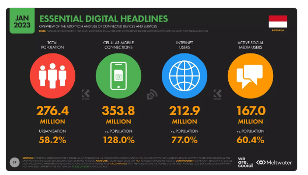Pada beberapa materi berikutnya, Anda akan berkenalan dan memahami cara internet bekerja, pengertian website dan halaman web, web browser beserta cara kerjanya, web server, dan anatomi halaman website. Ini merupakan hal yang penting untuk diketahui oleh para web developer. Jika tidak demikian, rasanya kurang pas, bukan?
Bayangkan bahwa internet merupakan sebuah jalan yang menghubungkan diri kita pada suatu tujuan untuk mendapatkan sesuatu yang diincar. Contohnya, jika Anda seorang pelajar yang ingin mendapatkan banyak ilmu, sekolah adalah jalan untuk mencapai tujuannya. Anda dapat masuk ke kelas dan diizinkan oleh pihak sekolah untuk menimba ilmu dari seorang guru.
Analogi di atas mirip seperti website. Internet akan memberikan kemampuan pada user untuk mengirimkan permintaan dan menerima hasil permintaan (data) pada website. Hal ini terjadi juga pada Anda ketika mengakses website dicoding.com. Namun, apakah Anda tahu ke mana website mengirimkan permintaan dan dari mana data dapat diperoleh?
Sebenarnya, hal di atas terjadi karena komputer milik user terhubung dengan komputer lain yang biasa disebut dengan server. Kedua komputer ini berkomunikasi melalui sebuah jaringan, baik dengan kabel atau nirkabel. Server menerima permintaan yang dikirimkan dan menanggapi hasil permintaannya sehingga website dapat ditampilkan di komputer user.
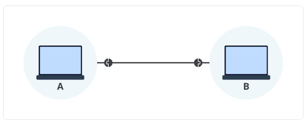Dengan konsep yang sederhana, bayangkanlah gambar di bawah merupakan bagan terhubungnya dua buah komputer untuk berkomunikasi.
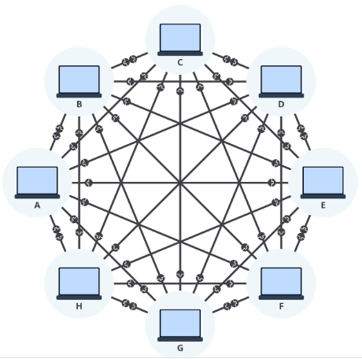Menyambungkan berbagai komputer satu persatu bukanlah cara yang efektif karena perlu mengatur koneksi untuk masing-masing komputer. Hal ini dapat diselesaikan dengan sebuah alat yang menghubungkan banyak komputer sekaligus. Perkenalkan, alat bernama Network Switch
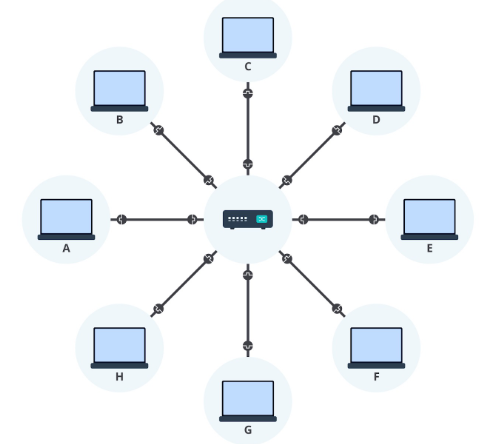Tidak hanya menghubukan banyak komputer sekaligus, network switch juga dapat terhubung dengan network switch lain sehingga jaringan yang terbentuk semakin besar.
Interconnection Network
Semakin besar jaringan yang diciptakan, semakin banyak komputer yang akan terhubung dan berkomunikasi. Komputer anda dapat terhubung dengan orang lain. Oleh karena itu, perkenalkan jaringan yang bernama Interconnection Network atau dikenal dengan internet
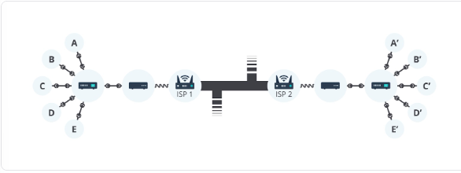Kita perlu menghubungkan komputer dengan infrasturktur telepon menggunakan alat yang dinamakan modem. Kita juga perlu terhubung ke Internet Service Provider (ISP)
ISP adalah sebuah perusahaan yang mengelola beberapa router khusus yang saling terhubung dengan router ISP lainnya. Dengan inilah kita bisa berkomunikasi, bahkan dengan orang di benua lainnyaHalaman Web
Halaman web merupakan halaman tunggal yang menampilkan informasi, baik berupa teks, gambar, maupun media lainnya. Tidak hanya media yang ditampilkan, halaman web yang dibangun dapat ditambahkan interaktivitas menggunakan kode (JavaScript).
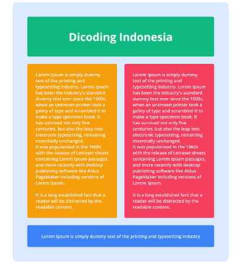Halaman web di bawah berisi banyak media yang disajikan hingga interaktivitas pengguna yang banyak. Halaman web yang diakses akan ditampilkan oleh browser menggunakan beberapa komponen pembangunnya. Kita akan membahas komponen-komponen ini pada materi Anatomi Website.
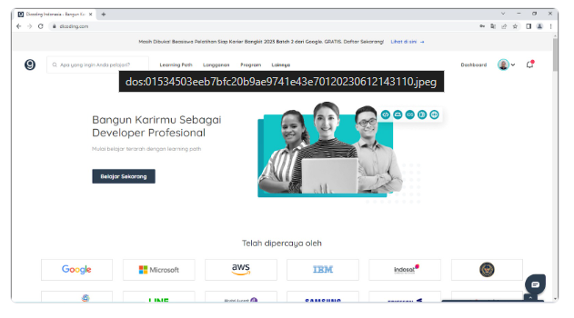Website adalah sekumpulan halaman web yang saling terhubung. Website bersifat unik karena setiap halaman dapat saling terhubung dengan menggunakan hipertaut (hyperlink), baik dalam domain yang sama maupun berbeda.
Umumnya website memuat informasi yang disediakan secara perorangan, kelompok, atau organisasi. Semua informasi yang tersedia pada halaman website disimpan pada server. Kita akan membahas mengenai server pada materi berikutnya.
Website merupakan teknologi yang sudah ada sejak 30 tahun silam. Tim Berners-Lee, seorang ilmuwan Inggris menemukan World Wide Web atau disingkat WWW pada tahun 1989 ketika ia bekerja di CERN (Conseil Européen pour la Recherche Nucléaire). Awalnya, web dibuat dan dikembangkan untuk memenuhi permintaan dalam berbagi informasi secara otomatis antar ilmuwan di universitas dan lembaga di seluruh dunia.
Website sudah berkembang sangat pesat. Sekarang, website tidak hanya digunakan untuk platform berbagi informasi atau berita. Layaknya aplikasi pada komputer dan telepon genggam, website dapat digunakan untuk komunikasi secara real-time, menyetel sebuah rekaman audio, hingga mengedit foto atau video
Anda perlu mencarinya dalam kolom pencarian pada platform tersebut dan daftar produk yang relevan akan disajikan untuk Anda.Namun, tahukah Anda apa yang terjadi di belakang? Bagaimana data dapat diperoleh dan ditampilkan dalam website? Hal ini termasuk pada halaman web yang sedang Anda akses. Kita akan membahasnya dalam materi ini.
Tahukah Anda bahwa browser dapat menampilkan website dengan baik karena mendapatkan data dari komputer lain yang biasa disebut dengan server. Bagi komputer yang mengakses website, kita disebut sebagai client, atau dalam hal ini adalah browser yang melakukan permintaan data.
Browser akan mengirimkan sesuatu yang bernama request pada server dan menerima data dalam sesuatu yang bernama response sebagai hasil tanggapan dari server. Data-data tersebut dapat berupa berkas HTML, CSS, JavaScript, dan aset-aset lain yang dibutuhkan untuk menampilkan website.
Proses di atas dapat direpresentasikan dalam proses pemesanan makanan di suatu restoran. Untuk mendapatkan sajian makanan dan minuman (website), Anda (client/user) perlu melakukan pesanan kepada pelayan restoran. Pelayan tersebut dapat diwakili sebagai browser yang akan membuat pesanan (request) dan meneruskannya kepada seorang koki (server). Hal ini seperti browser membuat request ke server saat user menggunakan URL pada address bar browser. Koki akan memproses pesanan tersebut dan segera menyediakan hasilnya (response). Setelah itu, koki memberikan hasil pesanan kepada pelayan dan menyajikannya kepada Anda. Sekarang, Anda dapat menikmati hasil hidangan tersebut (website).
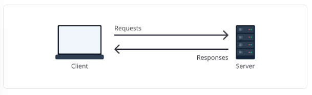Pengertian dari web server sebenarnya lebih merujuk pada sebuah software yang dapat menghubungkan sebuah komputer dengan komputer lain. Jadi, peranan server mengacu pada fungsi dari sebuah komputer tersebut. Berbicara mengenai web server, ia dapat terbagi menjadi dua hal, yaitu hardware dan software. Bukan berarti kedua hal tersebut bekerja secara terpisah, tetapi saling melengkapi dan bekerja sama.
Dari sisi hardware, web server merupakan komputer dengan spesifikasi yang disesuaikan berdasarkan layanannya. Contohnya, kapasitas hard drive yang besar akan dibutuhkan jika Anda memiliki website yang menyimpan banyak gambar, processor bertenaga tinggi akan diperlukan ketika Anda ingin membuat website yang memiliki proses kalkulasi kompleks, dan sebagainya.
Dari sisi software, web server merupakan komputer yang menjalankan sebuah program agar dapat melayani (menerima atau mengirim) data melalui jenis protokol bernama HTTP. Ini merupakan protokol standar dalam melakukan transaksi data oleh browser. Ada banyak program agar komputer kita dapat berkomunikasi dengan HTTP, yakni NGINX, Apache, ataupun membuatnya sendiri dengan menggunakan bahasa pemrograman server-side.
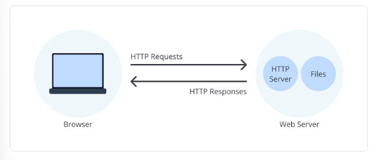Setiap perangkat, baik komputer, smartphone, modem, maupun router yang terkoneksi internet akan memiliki IP Address.
Sebenarnya, nama domain tidak akan menggantikan peran dari IP address. Komputer tetap menggunakan alamat IP untuk mengakses website. Namun, bagaimana caranya nama domain dapat diterjemahkan menjadi alamat IP? Berikut jawabannya.
Ketika user membuka website Dicoding menggunakan domain dicoding.com, browser akan menanyakan pada komputer, apakah ia mengenali dan dapat memberikan IP address-nya berdasarkan nama domain tersebut? Dia akan memeriksa berdasarkan DNS cache yang ada. Jika ada, browser akan diberikan alamat IP-nya dan menampilkan website yang diminta.
Jika komputer tidak mengenali nama domain tersebut, dia akan menanyakan pada DNS server yang secara singkat bertugas untuk memberi tahu alamat IP yang sesuai dari nama domain yang terdaftar padanya. Jika sudah, browser akan diberikan alamat IP-nya dan meneruskan permintaan konten halaman web ke web server.
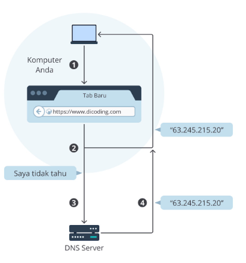Web browser atau disingkat browser merupakan sebuah program yang menampilkan halaman web. Tidak hanya satu halaman web, tetapi banyak website yang aktif di dunia ini dapat diakses oleh browser. Bahkan, halaman web yang saling terhubung dalam satu domain yang sama juga dapat diakses. Berikut adalah vendor-vendor browser yang dapat digunakan
Saat ini, Anda mungkin mengakses website ini menggunakan browser selain yang kami sebutkan. Hal tersebut juga merupakan salah satu software pengakses website. Jadi, silakan gunakan browser pilihan Anda
Ketika user mengakses website dengan URL, browser akan membuat sebuah request yang akan dikirimkan ke web server. Kemudian, web server akan mengirimkan response berisi konten-konten yang dibutuhkan oleh website dan browser akan memprosesnya hingga tampil website pada perangkat user.
Browser memiliki address bar yang merupakan sebuah input bagi user untuk menuliskan alamat website atau yang biasa disebut Uniform Resource Locator (URL). Ada tiga bagian pada URL, yaitu protocol (https), domain name (dicoding.com), dan file path (alamat halaman web yang sedang ditampilkan)
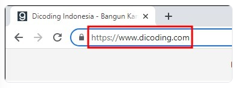Client dan web server berkomunikasi dengan protokol yang bernama HyperText Transfer Protocol (HTTP). Ketika user membuka website dengan URL, browser akan membuat dan mengirimkan HTTP request ke web server, serta menerima HTTP response yang dikirimkan oleh web server sebagai hasil request. Lalu, browser akan menampilkan halaman web berdasarkan konten-konten yang dikirimkan (HTML, CSS, JavaScript, dsb.). Proses ini juga bisa disebut sebagai request-response cycle
Website dibangun dengan beberapa komponen yang dimanfaatkan agar website dapat berjalan dengan baik dan interaktif. Berikut adalah bebetaoa komponen yang diperlukan dalam pembuatan website. Jika menggunakan IP tersebut untuk mengakses halaman Dicoding, tentu kita akan sulit mengingat dan mungkin akan berubah dari waktu ke waktu. Mengingat beberapa alamat IP mungkin masih mampu dilakukan. Namun, bagaimana jika harus mengingat 10 alamat IP? Untuk mengatasinya, kita menggunakan alamat yang mudah dibaca oleh manusia dan disebut domain name.
Ketiga komponen tersebut tidak dapat dipisahkan dalam pembuatan kerangka pembangunan website. Tanpa adanya CSS dan Javascript website akan terlihat tidak menarik dan membosankan
Sebagian tubuh hewan yang disusun dari kerangka tulang HTML pada website berperan sebagai kerangka dasar yang digunakan dalam menampilkan visual pada website. Namun kerangka hewan akan terlihat seram tanpa adanya kulit,bulu, warna bulu, dan lain-lainnya. Disinilah peran CSS
Setelah memiliki kulit dan tampak cantik, selanjutnya kita membutuhkan interaktivitas pada kucing agar dapat bergerak dan berinteraksi. Ibarat dalam kasus ini, JavaScript yang berperan dalam membuat website menjadi dinamis dan interaktif